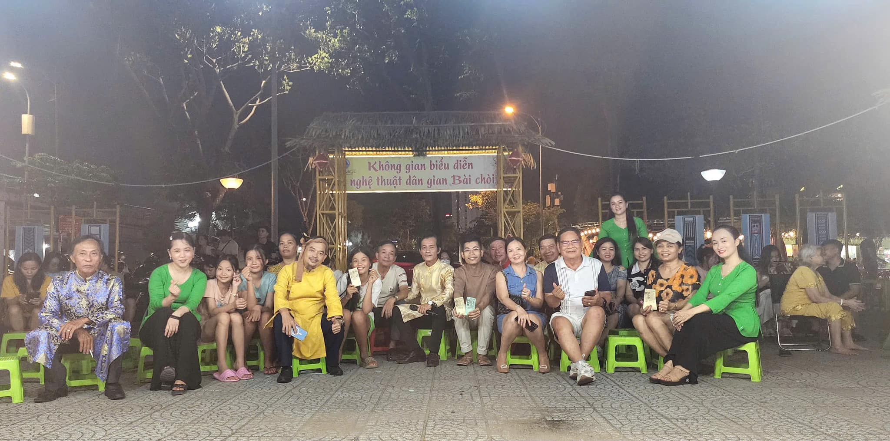

Giá trị văn hóa, xã hội
-Từ xa xưa , Bài Chòi đã là 1 phần trong đời sống người dân miền Trung , đây là hoạt động không thể thiếu trong các dịp lễ hội Tết và hội làng.Không gian diễn xướng thường diễn ra ngoài trời , với những chòi tre dựng lên để người dân tham gia, tạo nên không khí vui nhộn và gắn kết cộng đồng.
-Những câu hô hát trong Bài Chòi không chỉ mang tính giải trí mà còn chứa đựng nhiều bài học về đạo đức, nhân nghĩa, cách đối nhân xử thế.Qua các ván chơi, người nghe có thể học hỏi thêm về lịch sử, văn hóa, và triết lý sống.
Góp phần truyền tải văn hóa và bản sắc địa phương
-Mỗi vùng miền có cách chơi Bài Chòi khác nhau, phản ánh đặc điểm văn hóa của từng địa phương.
-Lời hát trong Bài Chòi sử dụng nhiều câu ca dao, tục ngữ, thể hiện lối sống, phong tục tập quán của người dân miền Trung.
-Với việc được UNESCO công nhận là di sản văn hóa phi vật thể, Bài Chòi không chỉ là niềm tự hào của người dân miền Trung mà còn góp phần nâng cao vị thế văn hóa Việt Nam trên thế giới.